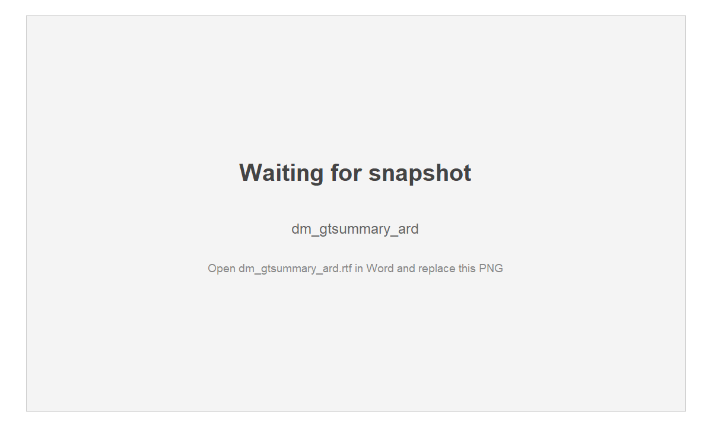
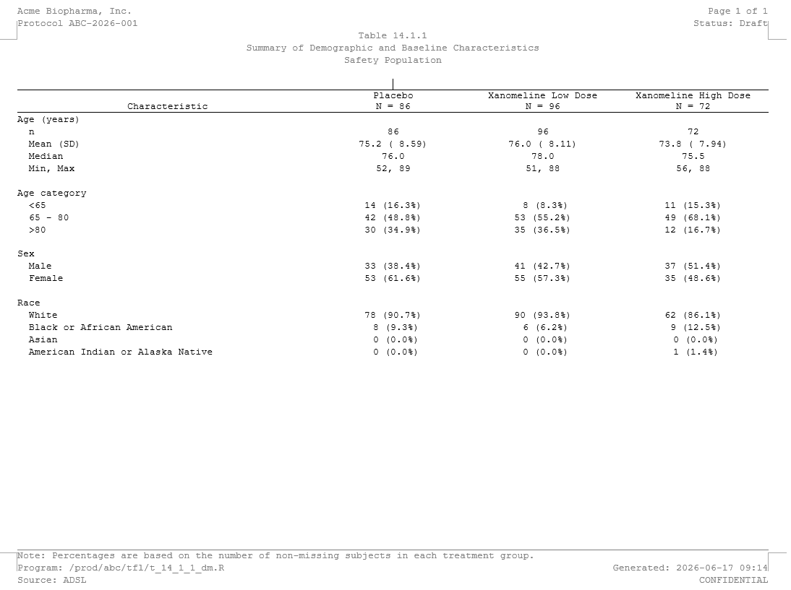
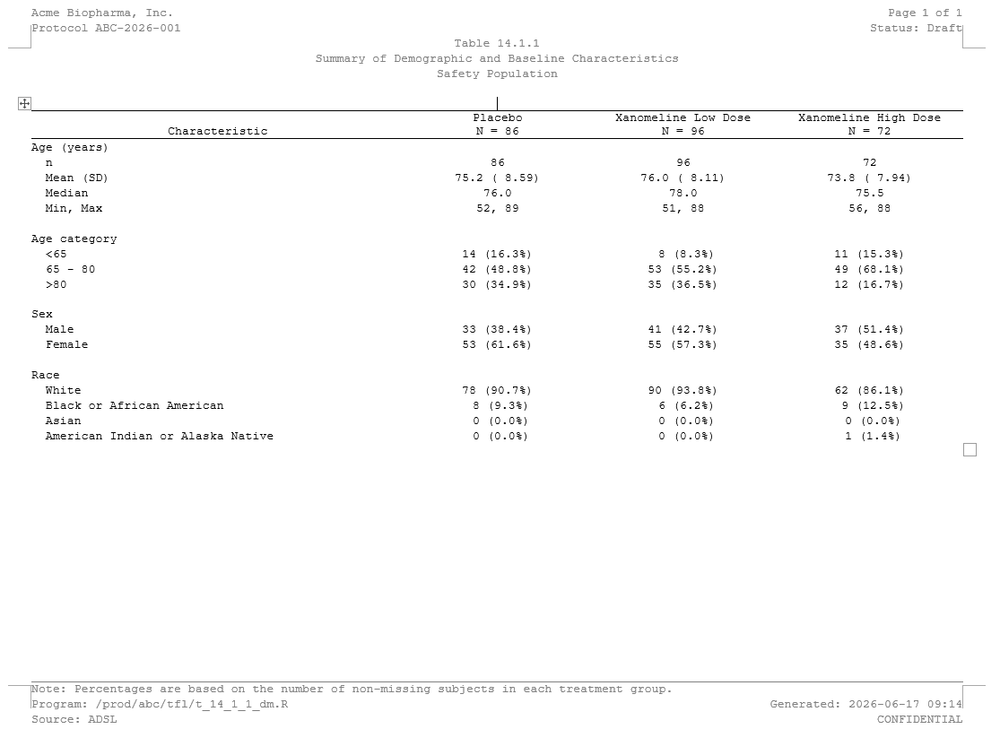
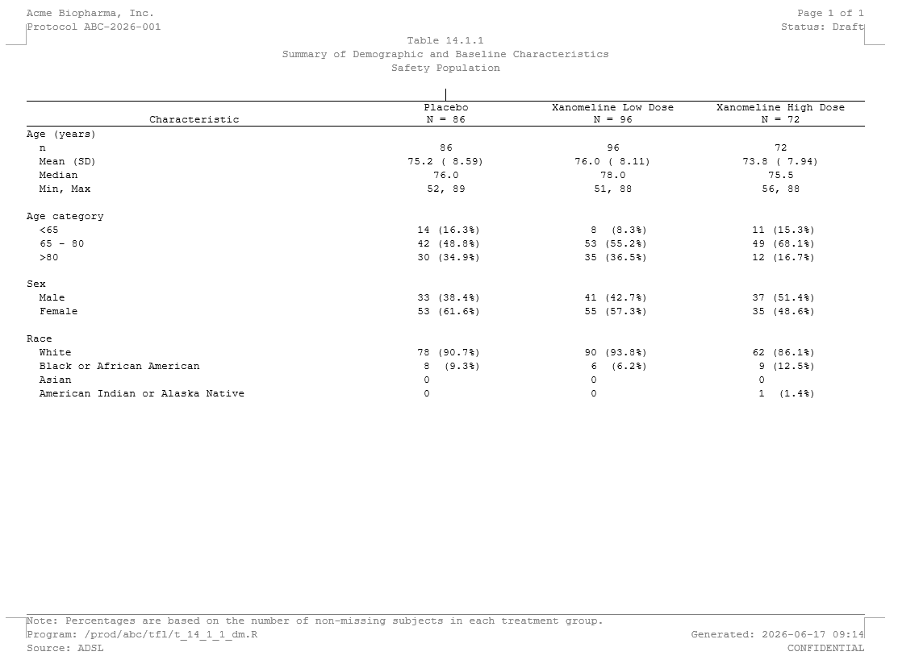
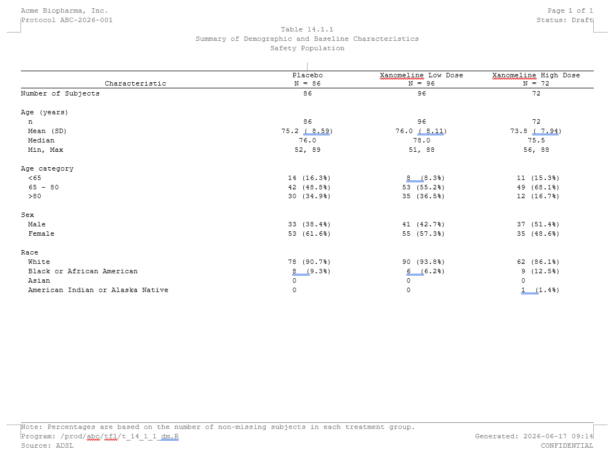

Same report, every framework: Demographics (DM)
Source:vignettes/articles/showcase-dm.Rmd
showcase-dm.RmdThe R ecosystem for clinical tables is wonderfully diverse – rtables/tern, tfrmt, gtsummary (on its own or on a cards/cardx ARD), Tplyr, gt, flextable, huxtable – and teams pick whichever fits their style and validation story. What they all have in common is the last step: a regulatory RTF that opens cleanly in Word.
That last step is exactly what rtfreporter does, for
all of them. This article builds the same
demographics report from the same data with several frameworks
and renders each to RTF through rtfreporter. The point is
not that one framework is best – it is that whatever you already
use, rtfreporter is the RTF back end. A companion article, Adverse events, does the same for a longer,
paginated adverse-events table.
Every block here is copy-paste runnable, from data creation to the written
.rtf. Run a section’s data and furniture blocks once (they prepare the data and the shared rtfreporter header / footer / column spec), then copy any single framework block: it builds that framework’s table and then calls rtfreporter directly –as_rtftables(),rtf_document(),generate_rtfreport()– to write its.rtf. We render witheval = FALSEin the article itself – so pkgdown does not have to run the entire framework stack – and show the Word output as a screenshot. The committed.rtffiles are produced by running these very chunks:data-raw/showcase_dm.Rextracts them withknitr::purl()and writes them toinst/rtf-examples/showcase/– so the code you read here is the generator.
The data
We use pharmaverseadam’s
adsl, restricted to the three randomised arms, and
summarise age (as n,
Mean (SD), Median, Min, Max), an
age category, sex and
race by treatment – a production-style Table 14.1
demographics layout.
library(rtfreporter)
library(dplyr)
arm_levels <- c("Placebo", "Xanomeline Low Dose", "Xanomeline High Dose")
adsl <- pharmaverseadam::adsl |>
filter(TRT01A %in% arm_levels) |>
mutate(
TRT01A = factor(TRT01A, levels = arm_levels),
SEX = factor(SEX, levels = c("M", "F"), labels = c("Male", "Female")),
AGEGR = cut(AGE, breaks = c(-Inf, 65, 81, Inf),
labels = c("<65", "65 - 80", ">80"), right = FALSE),
# All race categories as a factor, so even zero-count levels (Asian,
# American Indian) appear as "0 (0.0%)" in every framework.
RACE = factor(RACE, levels = c(
"WHITE", "BLACK OR AFRICAN AMERICAN", "ASIAN",
"AMERICAN INDIAN OR ALASKA NATIVE"),
labels = c("White", "Black or African American", "Asian",
"American Indian or Alaska Native")))
arm_n <- table(adsl$TRT01A)The shared rtfreporter furniture, defined once
The running header (sponsor, protocol, page number and the table title), the footer (analysis note, program path and run time), the Letter landscape page, the identical column header with the arm Ns, the 40 : 20 : 20 : 20 column widths and the left / centred alignment are all rtfreporter settings – the same for every framework below. We build them once here, as plain rtfreporter objects and values, and every framework block then references them. Only the table body changes from framework to framework.
# Running header: sponsor / protocol / page number, then the title block.
dm_header <- rtf_header(rows = list(
c(l = "Acme Biopharma, Inc.", r = "Page {AUTO_PAGE} of {AUTO_TOTAL_PAGES}"),
c(l = "Protocol ABC-2026-001", r = "Status: Draft"),
c(c = "Table 14.1.1"),
c(c = "Summary of Demographic and Baseline Characteristics"),
c(c = "Safety Population"),
c(c = ""))) # gap before the content
# Footer: analysis note, program path and run time.
dm_footer <- rtf_footer(rows = list(
c(l = "Note: Percentages are based on the number of non-missing subjects in each treatment group."),
c(l = "Program: /prod/abc/tfl/t_14_1_1_dm.R", r = "Generated: 2026-06-17 09:14"),
c(l = "Source: ADSL", r = "CONFIDENTIAL")))
# One identical column header for every framework (arm Ns underneath), the
# 40 : 20 : 20 : 20 relative widths, and row labels left / data columns centred.
dm_col_header <- c("Characteristic",
paste0(arm_levels, "\nN = ", as.integer(arm_n)))
dm_col_spec <- c(
list(list(col = 1L, align = "left", header_align = "center")),
lapply(2:4, function(j) list(col = j, align = "center", header_align = "center")))
dm_widths <- c(40, 20, 20, 20)Every framework block below ends with the same three rtfreporter steps, written out in full so nothing is hidden:
-
as_rtftables()turns the framework’s table into a list of rtfreporter pages, taking the shareddm_col_header/dm_col_spec/dm_widthsand a blank row between groups (blank_rows = "between_groups"); -
rtf_document() |> rtf_section() |> rtf_tables()wraps those pages with the shareddm_headeranddm_footeron a Letter-landscape page; -
generate_rtfreport()writes the.rtf.
A table per framework
Each framework below builds the demographics body
its own way; we then hand that object straight to the shared rtfreporter
pipeline. as_rtftables() reads the rendered body (and, with
read_meta = TRUE, any structural metadata), while our
explicit dm_col_header / dm_col_spec /
dm_widths force the one identical regulatory look across
all of them.
gtsummary
library(gtsummary)
tbl <- adsl |>
select(TRT01A, AGE, AGEGR, SEX, RACE) |>
tbl_summary(
by = TRT01A,
type = list(AGE ~ "continuous2"), # the 4-line age block
label = list(AGE = "Age (years)", AGEGR = "Age category",
SEX = "Sex", RACE = "Race"),
statistic = list(
AGE ~ c("{N_nonmiss}", "{mean} ({sd})", "{median}", "{min}, {max}"),
all_categorical() ~ "{n} ({p}%)"),
digits = list(AGE ~ list(N_nonmiss = 0, mean = 1, sd = 2,
median = 1, min = 0, max = 0)))
# (No modify_header: rtfreporter supplies the shared column header below.)
# align_count_pct lines up the "n (xx.x%)" cells; the shared furniture supplies
# the header / spec / widths. Now render straight to RTF:
pages <- as_rtftables(tbl, read_meta = TRUE, align_count_pct = TRUE,
col_header = dm_col_header, col_spec = dm_col_spec,
col_rel_width = dm_widths, blank_rows = "between_groups")
doc <- rtf_document(page = list(paper_size = "letter", orientation = "landscape")) |>
rtf_section(page = 1, secinfo = list(header = dm_header, footer = dm_footer)) |>
rtf_tables(pages)
generate_rtfreport(doc, "dm_gtsummary.rtf", overwrite = TRUE)gtsummary on a cards / cardx ARD
The modern, ARD-first workflow: compute an Analysis Results
Dataset with cards, summarise it with
gtsummary::tbl_ard_summary(), then hand the table to
rtfreporter exactly as above.
library(cards); library(gtsummary)
ard <- ard_stack(
data = adsl, .by = TRT01A,
ard_continuous(variables = AGE,
statistic = ~ list(N = length, mean = mean, sd = sd,
median = median, min = min, max = max)),
ard_categorical(variables = c(AGEGR, SEX, RACE)), .total_n = TRUE)
tbl <- tbl_ard_summary(
ard, by = TRT01A,
type = list(AGE = "continuous2"),
label = list(AGE = "Age (years)", AGEGR = "Age category",
SEX = "Sex", RACE = "Race"),
statistic = list(AGE = c("{N}", "{mean} ({sd})", "{median}", "{min}, {max}"),
all_categorical() ~ "{n} ({p}%)"))
pages <- as_rtftables(tbl, read_meta = TRUE, align_count_pct = TRUE,
col_header = dm_col_header, col_spec = dm_col_spec,
col_rel_width = dm_widths, blank_rows = "between_groups")
doc <- rtf_document(page = list(paper_size = "letter", orientation = "landscape")) |>
rtf_section(page = 1, secinfo = list(header = dm_header, footer = dm_footer)) |>
rtf_tables(pages)
generate_rtfreport(doc, "dm_gtsummary_ard.rtf", overwrite = TRUE)
rtables / tern
tern::analyze_vars() produces a VTableTree;
rtfreporter reads its row labels, column counts and
spanning structure via formatters::matrix_form().
library(rtables); library(tern)
lyt <- basic_table(show_colcounts = TRUE) |>
split_cols_by("TRT01A") |>
analyze_vars(
vars = c("AGE", "AGEGR", "SEX", "RACE"),
var_labels = c(AGE = "Age (years)", AGEGR = "Age category",
SEX = "Sex", RACE = "Race"),
.stats = c("n", "mean_sd", "median", "range", "count_fraction"),
# render the count/percent cells as "n (xx.x%)" to match the other frameworks.
.formats = c(count_fraction = function(x) {
sprintf("%d (%.1f%%)", round(x[1]), 100 * x[2])
}))
tbl <- build_table(lyt, adsl)
pages <- as_rtftables(tbl, read_meta = TRUE, align_count_pct = TRUE,
col_header = dm_col_header, col_spec = dm_col_spec,
col_rel_width = dm_widths, blank_rows = "between_groups")
doc <- rtf_document(page = list(paper_size = "letter", orientation = "landscape")) |>
rtf_section(page = 1, secinfo = list(header = dm_header, footer = dm_footer)) |>
rtf_tables(pages)
generate_rtfreport(doc, "dm_rtables.rtf", overwrite = TRUE)
cards + tfrmt
The same cards ARD as above, rendered with
tfrmt instead of gtsummary – so the one ARD drives two
different formatters. The ARD is reshaped to tfrmt’s
group / label / column / param / value long form, a
tfrmt spec formats it, and print_to_gt()
produces the gt that rtfreporter reads.
library(cards); library(tfrmt)
ard <- ard_stack(
data = adsl, .by = TRT01A,
ard_continuous(variables = AGE,
statistic = ~ list(n = length, Mean = mean, SD = sd,
Median = median, Min = min, Max = max)),
ard_categorical(variables = c(AGEGR, SEX, RACE)))
# Reshape the ARD to tfrmt's long form: group / label / column / param / value.
# sc1()/nm1() pull the first element of each list-column as character / numeric.
d <- as.data.frame(ard)
sc1 <- function(x) vapply(x, function(v) if (length(v)) as.character(v[[1]]) else NA_character_, character(1))
nm1 <- function(x) vapply(x, function(v) if (length(v)) suppressWarnings(as.numeric(v[[1]])) else NA_real_, numeric(1))
long <- d |>
mutate(column = sc1(group1_level), vlev = sc1(variable_level), value = nm1(stat)) |>
filter((variable == "AGE" & stat_name %in% c("n", "Mean", "SD", "Median", "Min", "Max")) |
(variable %in% c("AGEGR", "SEX", "RACE") & stat_name %in% c("n", "p"))) |>
transmute(
column = factor(column, levels = arm_levels),
group = recode(variable, AGE = "Age (years)", AGEGR = "Age category",
SEX = "Sex", RACE = "Race"),
label = case_when(
variable == "AGE" & stat_name == "n" ~ "n",
variable == "AGE" & stat_name %in% c("Mean", "SD") ~ "Mean (SD)",
variable == "AGE" & stat_name == "Median" ~ "Median",
variable == "AGE" & stat_name %in% c("Min", "Max") ~ "Min, Max",
TRUE ~ vlev),
param = ifelse(stat_name == "p", "pct", stat_name),
value = ifelse(stat_name == "p", value * 100, value))
# `long` is now ready. The two render chunks below each write out their own
# tfrmt spec in full -- they share this `long`, but nothing else.Who formats the n (xx.x%) cell?
This is a nice place to see the same table formatted two
ways, because the count/percent cell is exactly where
formatters differ. (Both render chunks reuse long from the
block just above, and each writes out its own tfrmt spec in
full – the only line that changes is the count/percent
frmt.)
A small but important detail first: write the percent as
x.x, not xx.x.
frmt("xx.x") right-pads the integer part, so a one-digit
percent prints with a leading space inside the parentheses –
( 3.5%). frmt("x.x") gives a clean
(3.5%).
Way 1 – tfrmt formats and aligns. The percent uses
x.x; the count is padded to xx.
rtfreporter reads the strings and renders them
as-is (align_count_pct left off):
# tfrmt formats AND aligns: the count is padded to "xx", the percent is "x.x".
spec <- tfrmt(
group = group, label = label, column = column, param = param, value = value,
body_plan = body_plan(
frmt_structure(".default", ".default", frmt("xx.x")),
frmt_structure("Age (years)", "n", frmt("xx")),
frmt_structure(".default", "Mean (SD)",
frmt_combine("{Mean} ({SD})",
Mean = frmt("xx.x"), SD = frmt("xx.xx"))),
frmt_structure(".default", "Min, Max",
frmt_combine("{Min}, {Max}",
Min = frmt("xx"), Max = frmt("xx"))),
frmt_structure(c("Age category", "Sex", "Race"), ".default",
frmt_combine("{n} ({pct}%)", n = frmt("xx"), pct = frmt("x.x")))))
g1 <- print_to_gt(spec, long)
# tfrmt already aligned the strings; rtfreporter renders them as-is (no
# align_count_pct). Direct render:
pages <- as_rtftables(g1, read_meta = TRUE,
col_header = dm_col_header, col_spec = dm_col_spec,
col_rel_width = dm_widths, blank_rows = "between_groups")
doc <- rtf_document(page = list(paper_size = "letter", orientation = "landscape")) |>
rtf_section(page = 1, secinfo = list(header = dm_header, footer = dm_footer)) |>
rtf_tables(pages)
generate_rtfreport(doc, "dm_tfrmt.rtf", overwrite = TRUE) # tfrmt's alignment
Way 2 – rtfreporter formats. tfrmt does the bare
minimum – just clean n (x.x%) strings, no count padding –
and rtfreporter re-aligns them with
align_count_pct = TRUE:
# Same spec as Way 1, except the count is just "x" (no padding): tfrmt emits
# clean "n (x.x%)" strings and leaves the column alignment to rtfreporter.
spec <- tfrmt(
group = group, label = label, column = column, param = param, value = value,
body_plan = body_plan(
frmt_structure(".default", ".default", frmt("xx.x")),
frmt_structure("Age (years)", "n", frmt("xx")),
frmt_structure(".default", "Mean (SD)",
frmt_combine("{Mean} ({SD})",
Mean = frmt("xx.x"), SD = frmt("xx.xx"))),
frmt_structure(".default", "Min, Max",
frmt_combine("{Min}, {Max}",
Min = frmt("xx"), Max = frmt("xx"))),
frmt_structure(c("Age category", "Sex", "Race"), ".default",
frmt_combine("{n} ({pct}%)", n = frmt("x"), pct = frmt("x.x")))))
g2 <- print_to_gt(spec, long)
# rtfreporter owns the count/percent alignment via align_count_pct = TRUE.
pages <- as_rtftables(g2, read_meta = TRUE, align_count_pct = TRUE,
col_header = dm_col_header, col_spec = dm_col_spec,
col_rel_width = dm_widths, blank_rows = "between_groups")
doc <- rtf_document(page = list(paper_size = "letter", orientation = "landscape")) |>
rtf_section(page = 1, secinfo = list(header = dm_header, footer = dm_footer)) |>
rtf_tables(pages)
generate_rtfreport(doc, "dm_tfrmt_rtfreporter.rtf", overwrite = TRUE) # rtfreporter aligns
The two are deliberately not byte-identical. tfrmt anchors
the ( right after the count, so the percentages stay
left-aligned within the parentheses. rtfreporter’s
align_count_pct instead right-aligns the whole
parenthetical so the decimal points line up, and drops
the redundant decimal at 100% (100%, not
100.0%). Use whichever convention your SAP calls for – the
point is that you can hand rtfreporter already-formatted
strings or let it own the count/percent alignment, from the
very same tfrmt table.
When the framework returns only the numbers
Some frameworks return just the formatted body – the numbers as strings – with no layout. You assemble the labelled body yourself, then hand it to the same rtfreporter pipeline as everything else.
Tplyr
Tplyr::build() returns a data frame of formatted strings
(plus ordering helpers). We reshape it into a labelled body – group
headers with indented stats and a “Number of Subjects” row on top – and
hand that plain data frame to the shared rtfreporter render.
library(Tplyr)
built <- tplyr_table(adsl, TRT01A) |>
add_layer(group_desc(AGE, by = "Age (years)") |>
set_format_strings("n" = f_str("xx", n),
"Mean (SD)" = f_str("xx.x (xx.xx)", mean, sd),
"Median" = f_str("xx.x", median),
"Min, Max" = f_str("xx, xx", min, max))) |>
# "x.x" (not "xx.x") so a one-digit percent has no leading space inside the
# parens -- a clean " 1 (1.2%)" that align_count_pct can re-align.
add_layer(group_count(AGEGR, by = "Age category") |>
set_format_strings(f_str("xx (x.x%)", n, pct))) |>
add_layer(group_count(SEX, by = "Sex") |>
set_format_strings(f_str("xx (x.x%)", n, pct))) |>
add_layer(group_count(RACE, by = "Race") |>
set_format_strings(f_str("xx (x.x%)", n, pct))) |>
build()
# Reshape `built` into `disp`: one column per arm, a label column with each
# group header followed by its indented stat rows, in a fixed display order.
val_cols <- paste0("var1_", arm_levels)
ord <- c("Age (years)", "n", "Mean (SD)", "Median", "Min, Max",
"Age category", "<65", "65 - 80", ">80",
"Sex", "Male", "Female",
"Race", "White", "Black or African American", "Asian",
"American Indian or Alaska Native")
groups <- c("Age (years)", "Age category", "Sex", "Race")
body <- built[order(built$ord_layer_index, built$ord_layer_1, built$ord_layer_2), ]
disp <- do.call(rbind, lapply(split(body, factor(body$row_label1, groups)), function(g) {
hdr <- data.frame(Characteristic = g$row_label1[1], stringsAsFactors = FALSE)
hdr[val_cols] <- ""
rows <- data.frame(Characteristic = paste0(" ", g$row_label2),
stringsAsFactors = FALSE)
rows[val_cols] <- lapply(val_cols, function(c) g[[c]])
rbind(hdr, rows)
}))
disp <- disp[order(match(sub("^ ", "", disp$Characteristic), ord)), ]
# "Number of Subjects" line on top (just N).
top <- data.frame(Characteristic = "Number of Subjects", stringsAsFactors = FALSE)
top[val_cols] <- as.character(as.integer(arm_n))
disp <- rbind(top, disp)
names(disp) <- c("Characteristic", arm_levels)
rownames(disp) <- NULL
# Metadata lives HERE, in rtfreporter -- not in Tplyr. We pass the body plus the
# shared furniture straight to as_rtftables() and render it.
pages <- as_rtftables(disp, align_count_pct = TRUE,
col_header = dm_col_header, col_spec = dm_col_spec,
col_rel_width = dm_widths, blank_rows = "between_groups")
doc <- rtf_document(page = list(paper_size = "letter", orientation = "landscape")) |>
rtf_section(page = 1, secinfo = list(header = dm_header, footer = dm_footer)) |>
rtf_tables(pages)
generate_rtfreport(doc, "dm_tplyr.rtf", overwrite = TRUE)
Two ways to divide the work
The frameworks above split into two camps – not in how
rtfreporter renders them (that pipeline is identical), but
in how much layout the framework hands you:
| Ready-made body | Body you assemble | |
|---|---|---|
| Examples | rtables/tern, gtsummary, cards + gtsummary, cards + tfrmt | Tplyr (and other body-only tools) |
| What the framework gives you | group headers + indented rows, laid out | formatted numbers only |
| Your job before rtfreporter | none – pass the object | reshape into a labelled body |
| The rtfreporter render | identical | identical |
Either way the regulatory furniture (dm_col_header /
dm_col_spec / dm_widths, plus the shared
header and footer) lives once in rtfreporter, and both
routes produce the same RTF.
Where next
- Showcase: adverse events — the hierarchical counterpart
- Worked example: demographics — the shorter version of this table
The four recipes (?rtfreporter-recipes) are the same
ground covered as runnable help-page examples: demographics, adverse
events, PK and laboratory, each data-in to RTF-out.